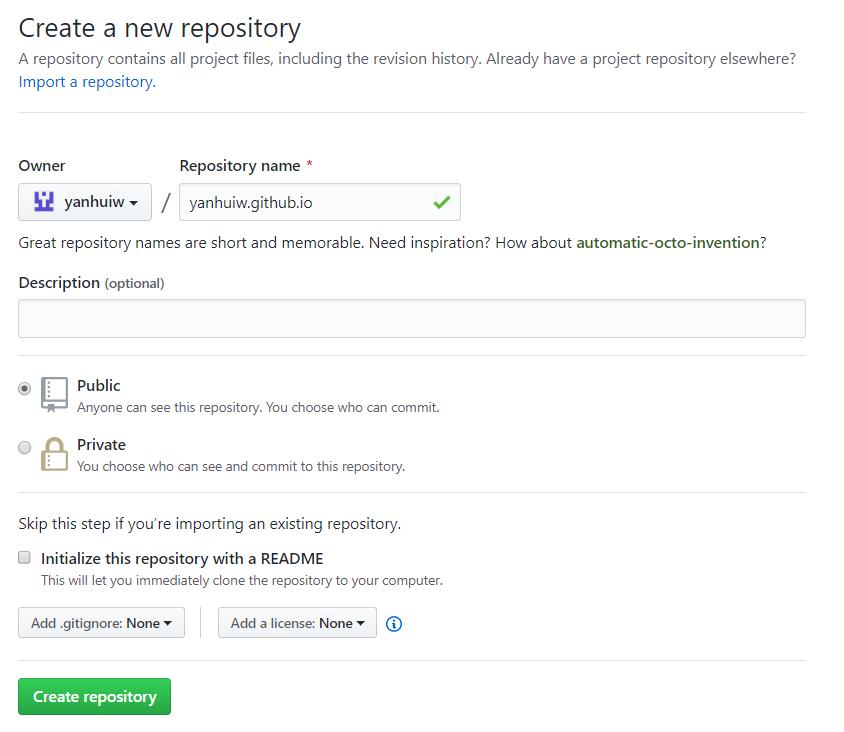

前言
为什么要搭建自己的博客？原因也许有以下几点。
- 用博客的形式记录技术进展，困惑，思考与收获，获得长期的叠加式的进步。
- 通过博客输出倒逼技能输入，提高个人水平。
- 通过博客输出提高表达能力。
- 树立个人品牌。他人可以通过个人博客快速且全面地了解自己。
- 拥有自主权。个人博客少有平台限制，言论自由度更高。自由是宝贵的。
Hexo
Hexo 是一个快速、简洁且高效的博客框架。
Hexo 是一款基于 Node.js 的静态博客框架，依赖少易于安装使用，可以方便的生成静态网页托管在 GitHub 和 Heroku上，是搭建博客的极佳选择。Hexo 使用 Markdown（或其他渲染引擎）解析文章，编辑方便，对中文的支持很友好。Hexo也是GitHub上的开源项目，参见：hexojs/hexo
环境安装
这里我们选择在 GitHub上搭建 Hexo 博客。所需环境为 Node.js 和 Git。
1、安装 Node.js https://nodejs.org/en/
2、安装 Git https://github.com/waylau/git-for-win
Git教程推荐廖雪峰老师的博客 https://github.com/waylau/git-for-win
3、安装 Hexo : 打开 cmd 运行 npm install -g hexo
1 | npm install -g hexo |
博客搭建
在合适的地方（比如 E:\blog ）新建一个文件夹，用来存放博客文件。
进入该文件夹，右击运行 Git Bash Here，输入hexo init 初始化文件夹。
1 | hexo init |
初始化后，\source\_posts目录下自带一篇 hello world 文章。
依次输入 hexo g , hexo s， 访问本地服务器http://localhost:4000/ ，可以看到博客已经搭建成功。
1 | hexo g |
hexo常用命令
- hexo n “my blog” == hexo new “my blog” #新建文章，保存在\source\_posts文件夹下。
- hexo g == hexo generate #生成
- hexo s == hexo server #启动本地服务预览， 访问http://localhost:4000/ 进行网站预览
- hexo d == hexo deploy #部署
博客关联 Github
在 Github 上创建名字为”your github name”.github.io 的项目。如果没有github账号，需要先注册一个 github 账号 https://github.com/

在开始菜单里找到 Git Bash，进行 Github 账号关联。将用户名和邮箱配置为 github 的注册用户名和邮箱。
1 | git config --global user.name "your name" |
打开博客根目录下的 _config.yml 文件，修改 deploy 配置。_config.yml是博客的配置文件。repository 修改为当前的 github 项目地址 https://github.io/"your github name"/"your github name".github.io
1 | deploy: |
在博客根目录下右击运行 Git Bash Here，运行以下命令，将本地 hexo 博客与远程 github 项目进行关联。
1 | npm install hexo-deployer-git –save |
此时，打开浏览器，可以访问 http://"your github name".github.io 比如： https://yanhuiw.github.io
其中会跳出 Github登录页面，直接登录，会跳转到上述博客页面。
发布文章
new 在本地新建文章
Hexo 有三种默认布局：
post、page和draft。在创建这三种不同类型的文件时，它们将会被保存到不同的路径；而自定义的其他布局和post相同，都将储存到source/_posts文件夹。布局 路径 postsource/_postspagesourcedraftsource/_draftsMarkdown 编辑文章
generate 生成静态文件
server 预览文章，访问http://localhost:4000/ 进行网站预览
deploy 部署网站，发布文章
1 | #默认layout为_config.yml中的default_layout（通常是post） |
hexo命令集 https://hexo.io/zh-cn/docs/commands
博客基础设置
打开博客根目录下的 _config.yml 文件，修改 Site 配置。
主要包括：
- title - 博客名称
- description - 座右铭/个性签名
- author - 作者
- language - 语言
示例：
1 | # Site |
主题设置
Hexo有丰富的主题风格。NexT 是目前最流行的主题之一，也是本博客使用的主题。详见NexT主题设置